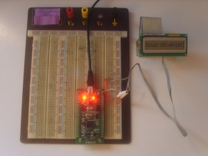
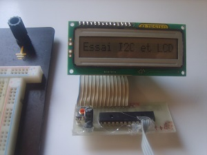
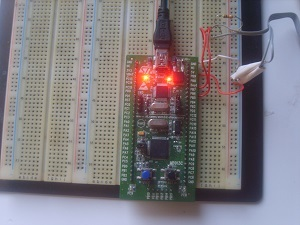

Vous n'êtes pas seuls dans l'Univers !

/
I2C, LCD : Piloter un afficheur
Cet article montre comment il est possible de piloter un afficheur LCD graphique alphanumérique à commande parallèle, grâce à un bus I2C.
Il est expliqué, pour cette deuxième partie, comment on peut s'y prendre en utilisant un circuit intégré de type « MCP23016 » ou de type « MCP23017 ».
1) Présentation
Les circuits intégrés envisagés ici, qui sont de type « MCP23016 » et « MCP23017 », sont des expanseurs de ports pilotées par un bus de type I2C, qui mettent à disposition 16 broches d'entrées - sorties, réparties sur deux banques de 8 broches chacune.
L'afficheur alphanumérique qui est connecté à l'un de ces curcuits intégrés est utilisé en mode 8 bits, et des broches de l'expanseur seront disponibles, aussi bien en tant qu'entrées logiques qu'en tant que sorties logiques, pour d'autres usages que le pilotage de l'afficheur.
2) Montages utilisant le MCP23016 et le MCP23017
2-1) Avec un MCP23016
2-1-1) Vues d'ensembles
Le montage a été verifié en utilisant deux platines d'expérimentations.
{kind=link}
{kind=link}
{kind=link}
Les connexions entre l'expanseur de ports pour bus I2C, l'afficheur LCD graphique alphanumérique et les 5 LED sont indiquées dans le tableau ci-dessous
| Afficheur LCD et LED | D0 | D1 | D2 | D3 | D4 | D5 | D6 | D7 | RS | RW | E | LED1 | LED2 | LED3 | LED4 | LED5 |
|---|---|---|---|---|---|---|---|---|---|---|---|---|---|---|---|---|
| MCP23016 | GP0.0 | GP0.1 | GP0.2 | GP0.3 | GP0.4 | GP0.5 | GP0.6 | GP0.7 | GP1.0 | GP1.1 | GP1.2 | GP1.3 | GP1.4 | GP1.5 | GP1.6 | GP1.7 |
2-1-2) Schéma
{kind=link}
2-1-3) Codes sources

Piloter un afficheur graphique alphanumérique avec un MCP23016 et un PIC18F4550 : Fichier C
Cible : PIC18F4550
Compilateur : MCC18
Télécharger le fichierEffectuez un clic droit, puis sélectionnez l'option « Enregistrer la cible du lien sous... », pour télécharger le fichier (2.51 Ko)
Piloter un afficheur graphique alphanumérique avec un MCP23016 et un PIC18F4550 : Fichier HEX
Cible : PIC18F4550
Compilateur : MCC18
Télécharger le fichierEffectuez un clic droit, puis sélectionnez l'option « Enregistrer la cible du lien sous... », pour télécharger le fichier (2.78 Ko)
2-2) Avec un MCP23017
2-2-1) Vues d'ensembles
Cet exemple met en œuvre une carte de développement de type « STM32VLDISCOVERY », équipé d'un microcontrôleur STM32F100RB.
|  |  |  |
{kind=link}
{kind=link}
{kind=link}
Les connexions entre l'expanseur de ports pour bus I2C et l'afficheur LCD graphique alphanumérique sont indiquées dans le tableau ci-dessous :
| Afficheur LCD | D0 | D1 | D2 | D3 | D4 | D5 | D6 | D7 | RS | RW | E | Inutilisée | Inutilisée | Inutilisée | Inutilisée | Inutilisée |
|---|---|---|---|---|---|---|---|---|---|---|---|---|---|---|---|---|
| MCP23017 | GPA7 | GPA6 | GPA5 | GPA4 | GPA3 | GPA2 | GPA1 | GPA0 | GPB0 | GPB1 | GPB2 | GPB3 | GPB4 | GPB5 | GPB6 | GPB7 |
2-2-2) Schéma
2-2-3) Typon
2-2-4) Codes sources
Les connexions entre le circuit et la carte de développement sont indiquées dans le tableau ci-après.
Les broches « PB6 » et « PB7 » sont reliées au + 5 volts par des résistances de tirage de 1 kilo Ohm.
| Carte de développement « STM32VLDISCOVERY » | +5V | 0V | PB6 | PB7 |
|---|---|---|---|---|
| Circuit intégré MCP23017 | +5V | 0V | SCL | SDA |
Piloter un afficheur graphique alphanumérique avec un MCP23017 et un STM32F100RB : Fichier C
Cible : STM32F100RB
Compilateur : Keil µVision4
Télécharger le fichierEffectuez un clic droit, puis sélectionnez l'option « Enregistrer la cible du lien sous... », pour télécharger le fichier (4.48 Ko)
Commentaires (0)
Ajouter un commentaire